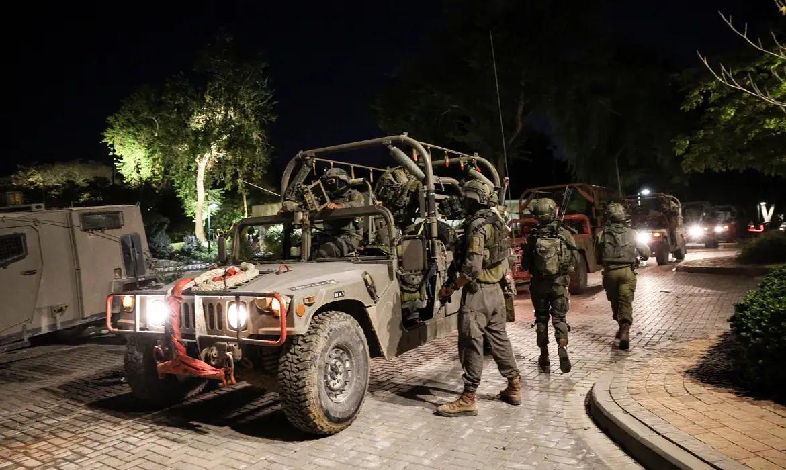
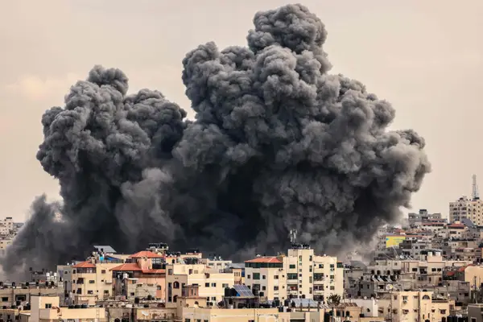

Ataques aéreos à Faixa de Gaza deixam destruição — Mahmud Hams/AFP
Continente e localização geográfica
Continente: Ásia Região: Oriente Médio Mar próximo: Mar Mediterrâneo Localização da Faixa de Gaza: Costa oriental do Mar Mediterrâneo, entre Israel e Egito. Área Aproximada: 365 km² Características físicas: Planície costeira, com praias, dunas de areia e áreas urbanizadas.
Fronteiras da região:
A Faixa de Gaza possui fronteiras terrestres e marítimas com:
Norte e Leste: Israel
Sul: Egito
Oeste: Mar Mediterrâneo
Países Envolvidos
Israel
Capital: Jerusalém
Participação no conflito: País que combate o Hamas.
Palestina
Capital: Jerusalém Oriental
Participação no conflito: Os palestinos vivem principalmente na Faixa de Gaza e na Cisjordânia. O Hamas atua em Gaza.
Egito
Capital: Cairo
Participação no conflito: Faz fronteira com Gaza e tem papel importante na passagem de pessoas e ajuda humanitária.
Irã
Capital: Teerã
Participação no conflito: É um importante apoiador do Hamas e de outros grupos armados da região.
Líbano
Capital: Beirute
Participação no conflito: Está envolvido no contexto regional por confrontos entre Israel e o Hezbollah, grupo distinto do Hamas.
Recursos naturais existentes
Gás natural: Existem reservas de gás natural no Mar Mediterrâneo, próximas à costa palestina, conhecidas como campos de Gaza Marine. Esse recurso pode contribuir para a produção de energia e para a economia palestina.
Terras agrícolas: Existem solos utilizados para o cultivo de hortaliças, frutas, oliveiras e outras culturas. A agricultura é importante para a alimentação e o sustento da população.
Água subterrânea: O aquífero costeiro é uma fonte fundamental de água, embora esteja muito afetado pela salinização, pela contaminação e pela exploração excessiva. Também existem areia e outros materiais utilizados na construção.
Importância estratégica da região
A Faixa de Gaza tem grande importância por cinco motivos principais:
Posição geográfica: Fica junto ao Mar Mediterrâneo, próximo de Israel, do Egito e de rotas comerciais regionais.
Segurança militar: Sua proximidade com cidades e comunidades israelenses faz com que o controle das fronteiras seja uma questão central para a segurança de Israel.
Controle das fronteiras e circulação: As passagens terrestres influenciam a entrada de alimentos, medicamentos, combustíveis, mercadorias e ajuda humanitária.
Recursos energéticos: O gás natural marítimo representa um possível recurso econômico e energético para os palestinos.
Importância política e histórica: Gaza faz parte da questão palestina, que envolve território, soberania, segurança, refugiados, direitos nacionais e a possibilidade de criação de um Estado palestino.
Feito por: Olivia Possarle
Razões para o surgimento do conflito
Conflito Israel e Hamas
1. Contexto histórico
O conflito entre Israel e Palestina começou no final do século XIX, quando judeus e árabes palestinos passaram a reivindicar o mesmo território. Os judeus defendiam a criação de um Estado próprio na região, considerada sagrada para sua religião.
Em 1947, a ONU propôs dividir a Palestina em dois Estados: um judeu e outro árabe. Em 1948, Israel declarou sua independência, provocando uma guerra e o deslocamento de milhares de palestinos, episódio conhecido como Nakba, que significa "catástrofe".
Em 1967, Israel ocupou a Faixa de Gaza e a Cisjordânia, aumentando as disputas territoriais que continuam até hoje.
2. Principais acontecimentos
Um dos acontecimentos mais importantes foi a criação do Hamas, em 1987, durante a Primeira Intifada, um movimento de revolta palestino contra a ocupação israelense.
Em 2005, Israel retirou seus soldados e assentamentos permanentes da Faixa de Gaza. Entretanto, manteve controle sobre aspectos importantes do acesso ao território, como o espaço aéreo e o acesso marítimo.
Em 2006, o Hamas venceu as eleições legislativas palestinas. No ano seguinte, após conflitos internos com o partido Fatah, assumiu o controle da Faixa de Gaza. Como consequência, Israel e Egito intensificaram as restrições à circulação de pessoas e mercadorias no território. A situação provocou sucessivos confrontos entre Israel e grupos armados palestinos.
Em 7 de outubro de 2023, o Hamas realizou um ataque contra Israel, matando aproximadamente 1.200 pessoas e fazendo cerca de 250 reféns. Israel respondeu com uma grande operação militar na Faixa de Gaza, dando início à atual guerra entre Israel e Hamas.
3. Disputas políticas
A principal disputa política envolve o direito dos israelenses e palestinos de terem Estados independentes e seguros. Israel busca garantir sua segurança nacional e impedir ataques contra sua população. Já os palestinos reivindicam a criação de um Estado próprio, com autonomia política e territorial.
Outras questões importantes são:
O controle de Jerusalém, cidade considerada importante por diferentes religiões.
A definição das fronteiras entre Israel e um possível Estado palestino.
O controle da Faixa de Gaza e da Cisjordânia.
O direito de retorno dos refugiados palestinos.
O reconhecimento político e a segurança de ambos os povos.
4. Fatores econômicos
A Faixa de Gaza enfrenta dificuldades econômicas há muitos anos, agravadas pelas restrições de circulação de pessoas e mercadorias, pelo desemprego e pela dependência de ajuda humanitária. O território possui limitações no acesso a recursos, no comércio com outros países e no desenvolvimento de atividades econômicas.
Além disso, os constantes confrontos provocam a destruição de moradias, hospitais, escolas, empresas e infraestrutura, prejudicando ainda mais a economia palestina. As disputas territoriais também envolvem o acesso à água, às terras e a outros recursos naturais.
5. Fatores religiosos
Jerusalém é uma cidade sagrada para três grandes religiões:
Judaísmo: é considerada a cidade mais sagrada do judaísmo, especialmente pela importância histórica do antigo Templo de Jerusalém.
Islamismo: abriga a Mesquita de Al-Aqsa, um dos locais mais sagrados do Islã.
Cristianismo: possui locais associados à vida e à história de Jesus Cristo.
As disputas pelo controle e pela administração de locais sagrados aumentam as tensões entre diferentes grupos. Entretanto, é importante destacar que o conflito também envolve questões territoriais, políticas e nacionais, e não deve ser entendido apenas como uma guerra religiosa.
6. Fatores étnicos
Os israelenses incluem pessoas de diferentes origens, sendo a maioria da população judaica. Já os palestinos são um povo predominantemente árabe, com identidade cultural, histórica e nacional própria.
Ao longo da história, as duas populações desenvolveram reivindicações sobre a mesma região, gerando disputas por território, reconhecimento e autodeterminação. É importante ressaltar que nem todos os judeus são israelenses, assim como nem todos os palestinos apoiam o Hamas.
Linha do tempo
1917: Declaração de Balfour: Reino Unido apoia a criação de um lar nacional judeu na Palestina.
1947: ONU propõe a divisão da Palestina em dois Estados.
1948: Israel declara sua independência e ocorre a Nakba palestina.
1967: Israel ocupa a Faixa de Gaza e a Cisjordânia.
1987: Criação do Hamas.
1993: Acordos de Oslo: tentativas de negociação de paz.
2005: Israel retira seus assentamentos permanentes de Gaza.
2006: Hamas vence as eleições palestinas.
2007: Hamas assume o controle da Faixa de Gaza.
2023: Ataque do Hamas contra Israel em 7 de outubro e início da guerra atual.
Feito por: Gabriela Oliveira
Quem participa?

Mapa do conflito
Israel: É o Estado que combate o Hamas. Suas Forças de Defesa (IDF) conduzem operações militares na Faixa de Gaza. Israel afirma que seus objetivos são combater o Hamas, impedir novos ataques e garantir a segurança de sua população.
Hamas: É uma organização palestina islamista, com atuação política e braço armado. Assumiu o controle de Gaza em 2007. É considerado uma organização terrorista por países como Estados Unidos, Reino Unido e União Europeia.
Autoridade Nacional Palestina: É uma administração palestina que exerce parte do governo na Cisjordânia. É liderada pelo movimento Fatah e não deve ser confundida com o Hamas. Defende uma solução política para a questão palestina e não controla atualmente a Faixa de Gaza.
Grupos armados envolvidos:
Hezbollah (Líbano): Organização político-militar libanesa apoiada pelo Irã. Entrou em confronto com Israel na fronteira entre os dois países, ampliando o conflito para além de Gaza.
Jihad Islâmica Palestina: Organização armada palestina que atua principalmente na Faixa de Gaza. Também combate Israel e mantém relações de apoio com o Irã.
Houthis: Movimento político e armado conhecido como Ansar Allah. Apoiado pelo Irã, realizou ataques contra alvos relacionados a Israel e embarcações no Mar Vermelho.
Brigadas Izz ad-Din al-Qassam: São o braço militar do Hamas e tiveram participação central.
Frente Popular para a Libertação da Palestina (FPLP): Organização política palestina de orientação marxista e nacionalista, que possui um braço armado e participa da resistência contra Israel.
Organizações internacionais envolvidas:
As organizações internacionais desempenham funções importantes na tentativa de reduzir a violência, proteger a população civil, negociar acordos e garantir o cumprimento do direito internacional:
Organização das Nações Unidas (ONU)
Agência da ONU para Refugiados Palestinos (UNRWA)
Comitê Internacional da Cruz Vermelha (CICV)
Organização Mundial da Saúde (OMS)
Corte Internacional de Justiça (CIJ)
Tribunal Penal Internacional (TPI)
União Europeia (UE)
Potências estrangeiras e seus interesses:
País
Forma de participação
Estados Unidos
Apoiam Israel militar e diplomaticamente e participam das negociações.
Irã
Apoia grupos como Hamas e Hezbollah, buscando influência regional.
Egito
Atua como mediador e participa das negociações de paz.
Catar
Participa das negociações e mantém diálogo com o Hamas.
Turquia
Critica as ações militares israelenses e defende os palestinos.
Rússia
Participa das discussões diplomáticas sobre o conflito.
China
Defende negociações e a criação de um Estado palestino.
Arábia Saudita
Defende a criação de um Estado palestino e participa das discussões regionais.
Jordânia
Oferece assistência humanitária e atua diplomaticamente.
Emirados Árabes Unidos
Participam de iniciativas diplomáticas e humanitárias.
Novos participantes das negociações e do plano de paz:
Em 2025, a ONU aprovou a Resolução 2803, que apoiou um plano de transição para Gaza. Entre os envolvidos estão os Estados Unidos, Egito, Catar e Turquia, que participam das negociações, além de um comitê palestino responsável pela administração civil e uma força internacional prevista para ajudar na estabilização e segurança da região.
População civil: quem também é afetado?
Civis palestinos: moradores da Faixa de Gaza e da Cisjordânia, que enfrentam deslocamentos, falta de alimentos, dificuldades de acesso à saúde e destruição de suas moradias.
Civis israelenses: população afetada pelos ataques do Hamas, pela insegurança e pelos deslocamentos nas áreas próximas às zonas de conflito.
Refugiados palestinos: pessoas que foram obrigadas a deixar suas casas ao longo da história do conflito e dependem, em muitos casos, de assistência internacional.
Feito por: Natálya Lozovoy
Principais interesses envolvidos

Interesses territoriais no Oriente Médio.
1. Petróleo
O petróleo não é o principal motivo da guerra, mas é importante para a economia do Oriente Médio. Países da região possuem grandes reservas e, por isso, têm influência econômica e política. No conflito entre Israel e Hamas, porém, a disputa por território e segurança é muito mais importante do que o petróleo.
2. Gás natural
Existem reservas de gás natural próximas à costa da Faixa de Gaza. A exploração desse recurso poderia gerar dinheiro, empregos e ajudar no desenvolvimento da economia palestina. Por isso, o gás tem importância econômica, embora não seja considerado a principal causa da guerra.
3. Minérios
Os minérios não são um dos principais interesses desse conflito. A disputa está mais relacionada ao controle territorial, à segurança e aos direitos políticos dos israelenses e palestinos do que à exploração mineral.
4. Água
Israel e os territórios palestinos enfrentam dificuldades relacionadas à disponibilidade de água. Israel busca garantir o abastecimento de sua população, enquanto os palestinos precisam de maior acesso à água potável para sobreviver e desenvolver suas cidades. Em Gaza, a guerra e a destruição de tubulações e sistemas de abastecimento agravam muito esse problema.
5. Rotas comerciais
Israel está localizado em uma região estratégica para o comércio internacional. Manter a segurança das rotas marítimas e terrestres é importante para transportar mercadorias e fortalecer a economia. Os conflitos na região também podem prejudicar o comércio e aumentar os custos de transporte.
6. Territórios disputados
Esse é um dos principais motivos do conflito. Israel busca garantir sua segurança e manter o controle sobre áreas que considera importantes estrategicamente. Já os palestinos lutam pelo direito de ter um Estado independente, com território próprio. A Faixa de Gaza, a Cisjordânia e Jerusalém Oriental estão entre as principais áreas envolvidas na disputa.
7. Influência internacional
Outros países também participam indiretamente do conflito porque desejam proteger seus interesses políticos e estratégicos. Os Estados Unidos apoiam Israel, enquanto o Irã apoia o Hamas e outros grupos armados. Egito e Catar participam de negociações para tentar alcançar acordos de cessar-fogo.
8. Vídeo explicativo
Feito por: Julia Prado
Impactos do conflito
População palestina afetada pelo conflito
1. Mortos
O conflito se intensificou em 7 de outubro de 2023, quando ataques em Israel deixaram cerca de 1.200 mortos. Na Faixa de Gaza, foram registrados 71.803 mortos até 3 de fevereiro de 2026, incluindo pelo menos 21.289 crianças. Mesmo após a trégua iniciada em 10 de outubro de 2025, novas mortes continuaram a ser contabilizadas.
2. Feridos
Até 3 de fevereiro de 2026, Gaza somava 171.230 feridos, dos quais 44.500 são crianças. Em Israel, o ataque inicial deixou cerca de 14.970 feridos que necessitaram de hospitalização. O tratamento dos feridos é gravemente afetado pela destruição da rede hospitalar e pela falta de insumos médicos.
3. Refugiados
Enquanto a maioria dos afetados permaneceu dentro do próprio território como deslocados internos, uma parcela de palestinos conseguiu sair para outros países. Do lado israelense, milhares de residentes próximos à Faixa de Gaza e à fronteira com o Líbano precisaram abandonar suas casas por motivos de segurança.
4. Deslocados Internos
Mais de 1,9 milhão de palestinos foram deslocados internamente em Gaza, muitos por repetidas vezes. Mais de 1,2 milhão de pessoas perderam suas casas, passando a viver em tendas, abrigos improvisados ou prédios danificados sob forte superlotação e sem saneamento adequado.
5. Impactos Econômicos
A economia de Gaza sofreu uma contração de 84%. Os danos à infraestrutura física são estimados em US$ 35,2 bilhões, somados a US$ 22,7 bilhões em perdas econômicas e sociais. A necessidade para recuperação e reconstrução em 10 anos é estimada em US$ 71,4 bilhões.
6. Impactos Sociais
O sistema de saúde opera no limite, restando apenas cerca de 2.000 leitos hospitalares em Gaza e nenhum hospital plenamente funcional. Mais de 658 mil crianças estão fora do sistema de ensino, com cerca de 95% das escolas danificadas ou destruídas. Em 2025, 320 mil crianças menores de 5 anos estavam em risco de desnutrição aguda.
7. Impactos Ambientais
Quase 90% da infraestrutura de água e saneamento foi danificada ou destruída, gerando contaminação do solo e vazamento de esgoto. O acúmulo massivo de entulho dos bombardeios, a destruição de terras agrícolas e a falta de coleta de resíduos provocam sérios riscos sanitários e à agricultura.
Feito por: Manoela Barboza
📝 Quiz: Israel x Hamas
Responda às 5 perguntas abaixo para testar seus conhecimentos sobre o conflito: